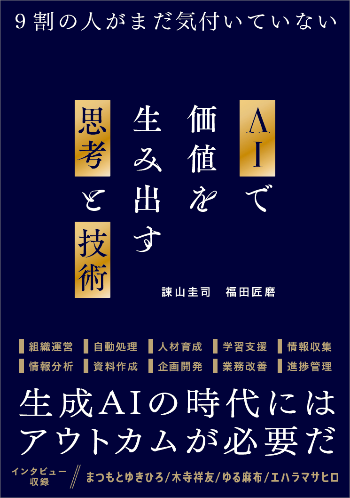

AIを「使える」だけでは、もう足りない。
効率化の先にある、新しい価値の創出へ——
基礎・思考・技術の三部構成で、あなたのAI活用を根本から変える一冊。
FROM THE BOOK
昨日、ちょうど就活が解禁されたね。
このメールを読んでいる君は、きっと意味がわからないと思う。
これは2026年3月の君が「生成AI」と呼ばれるものに頼んで書いてもらっている文章だ。AIがスマートフォンのアプリになっていて、人間の言葉で文章を書くことができる。
2016年の君には魔法みたいに聞こえるだろうけど、こっちではもう当たり前の光景になっているんだ。
いま君は、エントリーシートの志望動機に頭を抱えているよね。何十社分も似たような文章をひねり出して、それでも「自分の言葉で書け」と言われて途方に暮れている。
こっちの世界では、その下書きをAIが数秒で用意してくれる。正直、最初に知ったとき、ホントにあの苦労は何だったんだと思ったよ笑
それから、...
10年前、著者は一人の就活生として、日々就職活動に明け暮れていました。もし、たくさんのお祈りメールの中にこれが紛れ込んでいたら、きっと「いたずら」だと思ってしまっていたでしょう。あまりにも荒唐無稽で、現実味のない話ですから。
あのときから10年の時間が経ち、2023年にChatGPTの登場によって大きな注目を集めた生成AIは、もはや当たり前のものとして私たちの生活の一部となりつつあります。
生成AIの存在は、それだけ圧倒的で不可逆な変化を世界に与えました。
REALITY
しかし、ここで「生成AIはもう終わった」と考えて、次のテクノロジーへと移ってしまうのは時期尚早です。テクノロジーは期待値のピークを過ぎて、それが当たり前のものとなったときに、現実的で有効な使い方を模索していくことこそが、ビジネスにおける最大のチャンスなのです。
STRUCTURE
PART 01
知っていると役立つ生成AIの基礎知識。進化し続ける最新の生成AIサービスの仕組みを理解する。
PART 02
生成AIとどう向き合っていくか。AIを活用する上で必要な人間のマインドセットを身に付ける。
PART 03
生成AIを仕事で使いこなすコツ。業務で生成AIの性能を100%引き出す設定と準備を学ぶ。
TOPICS
SPECIAL INTERVIEWS
各界の著名人による珠玉のインタビューを収録
これからの人生に活きるAI活用スキルを身に付けましょう
書籍を購入するSBクリエイティブ刊 ｜ ISBN 978-4-8156-4002-6